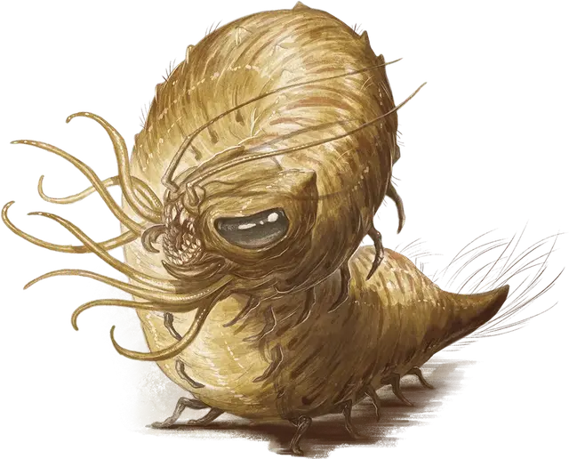

Ползающий падальщик
Carrion Crawler
Большой Монстр, без мировоззрения

Класс Доспеха 13 (природный доспех)
Хиты 51 (6к10 + 18)
Скорость 30 футов, лазая 30 футов
| мод | спас | ||
|---|---|---|---|
| СИЛ | 14 | +2 | +2 |
| ЛОВ | 13 | +1 | +1 |
| ТЕЛ | 16 | +3 | +3 |
| мод | спас | ||
|---|---|---|---|
| ИНТ | 1 | −5 | −5 |
| МДР | 12 | +1 | +1 |
| ХАР | 5 | −3 | −3 |
Навыки Восприятие +3
Чувства тёмное зрение 60 футов, пассивное Восприятие 13
Опасность 2 (450 опыта)
Бонус мастерства +2
Среда обитания Подземье
Особенности
Тонкий нюх. Ползающий падальщик совершает с преимуществом проверки Мудрости (Восприятие), полагающиеся на обоняние.
Паучье лазание. Ползающий падальщик может лазать по сложным поверхностям, включая потолки, без совершения проверок характеристик.
Действия
Мультиатака. Ползающий падальщик совершает две атаки: одну щупальцами, и одну укусом.
Щупальца. Рукопашная атака оружием: +8 к попаданию, досягаемость 10 футов, одно существо. Попадание: Урон ядом 4 (1к4 + 2), и цель должна преуспеть в спасброске Телосложения Сл 13, иначе станет отравленной на 1 минуту. Пока цель отравлена, она парализована. Цель может повторять этот спасбросок в конце каждого своего хода, оканчивая отравление на себе при успехе.
Укус. Рукопашная атака оружием: +4 к попаданию, досягаемость 5 футов, одна цель. Попадание: Колющий урон 7 (2к4 + 2).
Описание
Ползающие падальщики объедают гнилую плоть с трупов, а потом обгладывают оставшиеся кости. Они агрессивно атакуют любое существо, которое зашло на их территорию или беспокоит их пиршество.
Пожиратели падали. Падальщик следует за запахом смерти к своей еде, но предпочитает не конкурировать с другими мусорщиками, поэтому обитают на территориях, где царствует смерть, но другие падальщики туда не могут проникнуть. Пещеры, водостоки, подземелья и лесистые болота являются их излюбленными логовами, но падальщики также появляются на полях сражений и местах захоронения.
На охоте падальщик бесцельно блуждает, зондируя воздух щупальцами в поисках запаха крови или разложения. В туннелях или руинах, падальщики передвигаются по потолку на пути к еде. Так они избегают контакта со слизями, отиджами и другими опасными обитателями тьмы, и так же они застают врасплох потенциальную пищу, которая и не думает посмотреть наверх.
Терпеливые хищники. И в подземной темноте и во время охоты в ночное время, свет сигнализирует о потенциальной еде. Падальщик может следовать за далеким источником света в течение нескольких часов, в надежде учуять запах крови. Несмотря на большие размеры, падальщики могут также легко устраивать засады, ожидая добычу в темных закоулках, пока добыча не приблизится к ним.
При столкновении с потенциальной добычей или захватчиком, падальщик позволяет своему яду делать его работу. Как только жертву парализует, падальщик охватывает её своими щупальцами и тащит прочь к высокому выступу или изолированному проходу, где может убить её в безопасности. Затем чудовище возобновляет патрулирование своей территории, ожидая, пока его еда созреет.